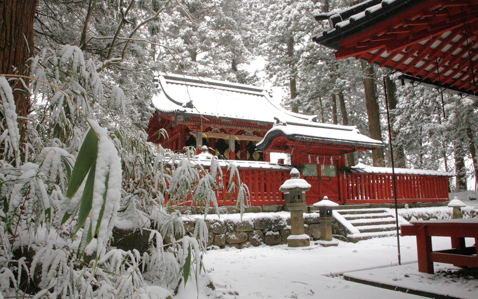
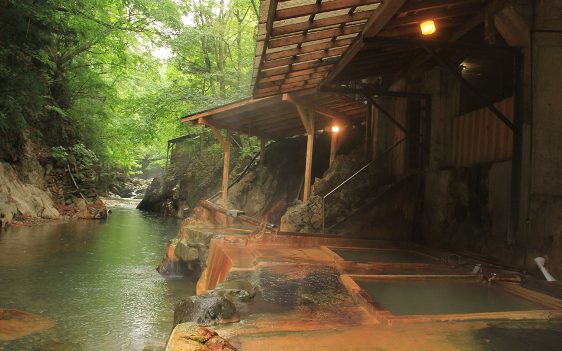

Tochigi Prefecture is a popular tourist destination located approximately 100 kilometres north of Tokyo and is easily accessible. Be surrounded by nature after just a 50-minute Shinkansen ride or 90-minute drive from Tokyo.
Popular throughout the year, cool winters let you enjoy hot springs (Onsen) surrounded by snow. The cool, northern mountainous areas have always been famous as summer resorts. Large temperature differences between day and night allow the growth of rich agricultural products. Seasonal charms welcome tourists throughout the year with flowers such as cherry blossoms and wisterias in spring and some of the nation’s most beautiful autumn foliage.
Prefecture Image
Shrines and Temples of Nikko
Things to Do in Tochigi
One of 630 Onsens
